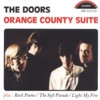

ONE HUNDRED MINUTES (2 CD)
Tuff Bites T.B. 95.1040, Luxembourg 1996 |
Disc One: 1.Roadhouse Blues/
2.Alabama Song-Back Door Man-Five To One/ 3.When
The Music's Over/ 4.Love Me Two Times/ 5.Little
Red Rooster/ 6.Money/ 7.Rock Me Baby/ 8.Who Do
You Love
Disc Two: 1.The Soft Parade
Intro (cover says Petition The Lord With Prayer -
Poem)/ 2.Light My Fire-Fever-Summertime-St.James
Infirmary-Fe- ver-Light My Fire/ 3.The End/
4.Soul Kitchen-Runnin Blue-Soul Kitchen/ 5.Break
On Through/ 6.The Crystal Ship/ 7.Wake Up/
8.Light My Fire |
| Sources: Disc One= Pacific National
Exhibition Coliseum, Vancouver, Canada, June 6th,
1970. Disc Two: tracks 1-3= Pacific National
Exhibition Coliseum, Vancouver, Canada, June 6th,
1970; tracks 4-8= Chicago Auditorium Theatre,
Chicago, IL, USA, November 9, 1968 |
| Soundquality: |
 |
|
|
|
|
 |
| Rarity Of Material: |
to |
|
|
|
|
| Visual Attractiveness: |
|
|
|
|
|
A new Tuff Bites CD (their CDs are known for their
significant caricature covers and their usual digipack
design). This double CD comes in a digi-fold-out-pack and
features the complete Doors 1970 Vancouver show (with
guest guitarist bluesman Albert King on a few songs) plus
4 songs from a 1968 performance in Chicago which has
never been published before on disc. Therefore this
double album is truly recommended - although some
of you collectors might already have either Canadian
Night (Buccaneer Records BUC 011) or Vancouver 70
(Skeleton Records SKCD 1066) or both. But the Tuff Bites
album features the complete concert (just one cut is
audible between Love Me Two Times and Little
Red Rooster) which means Alabama Song and Love
Me Two Times are on there as well as a few little
dialogues and instrument tunings between songs which were
missed on all previous releases of this concert (check
reviews of Canadian Night and Vancouver 70
in The Doors Quarterly #26. In general - Jim
Morrison is in a phantastic mood, his voice is stronger
than ever. The Doors were really getting back to the
blues with the help of Albert King's unmisakable guitar
riffs. The highlights are Little Red Rooster, Rock Me
Baby, The End and of course the best version of Light
My Fire that has ever been published. The
soundquality is excellent stereo.
The mono audience recording-quality of the bonus Chicago
tracks is worse, but better than nothing. More important
are the driving versions of Soul Kitchen (this
time combined with a few lines from Runnin' Blue:
"Poor Otis' dead and gone ..." and a
child's prayer: "Now I lay me down to sleep ...")
and Break On Through. Also featured, one of the
rare times Jim introduced the members of the band plus a
few funny comments from some girls standing next to the
recording microphone.
This double CD certainly should be on each hard core
collector's shelf. A true document of one of the best
Doors concerts in 1970 (just compare it to one of the
worst concerts of the band, taped just one day earlier in
Seattle, June 5th, 1970, presented on the otherwise
excellent Jim's Alive - The Ultimate Seattle Concert
(Tuff Bites T.B.94.1009). Recommended.
OPENING THE DOORS OF
PERCEPTION (CD)
Raven Records RVCD-33, Australia, 1993 |
| 1. Jim Morrison Interview, Isle Of Wight,
August 30th,1970 (The Doors played their gig the
night before)/ 2. Ray Manzarek Interview 1979/ 3.
Robby Krieger Interview 1979/ 4. John Densmore
Interview 1979/ 5. 1968 Press Conference
Extracts/ 6. Random Utterances |
| Sources: 1-4=interviews by journalist
& writer John Tobler, 5-6=from the video The
Doors Are Open and other sources. |
| Soundquality: |
|
|
|
|
|
|
| Rarity Of Material: |
to |
|
|
|
|
| Visual Attractiveness |
|
|
|
|
|
A very interesting interview CD, officially released in
Australia. Actually, this is no bootleg, but published
without The Doors' approval! It contains Tobler's own
interview with Jim Morrison, taped a day after The Doors'
Isle Of Wight concert.A copy of this tape was given to me
by John Tobler a couple of years ago, and I still enjoy
how Jim interrupted John's questions to hurry to the side
of the stage in order to watch Jimi Hendrix perform
(unfortunately this part of the tape is not on this CD).
When Hendrix passed by Morrison said, "Look, an
actual movie! Looks like a priest!" (Jimi was
filmed while walking to the stage, to be seen in his
official Isle of Wight video). The other interviews cover
the story of the group and their topic is -
surprise,surprise- Jim Morrison. This is an essential CD
for each serious fan; it is great to hear Jim TALK. We
didn't get much of that in the past ...
ORANGE COUNTY SUITE (CD)
Document Records DR 019, Germany/Luxembourg 1988 |
| 1.Bird of Prey/ 2.Rock is Dead/ 3.An
American Poet/ 4.Orange County Suite 5.The Soft
Parade Intro-Light My Fire |
| Sources: 1,3+4=Jim Morrisons first
poetry session, Los Angeles, Elektra Sound
Studios, March 1969 (cut version); 2=recording
session for the album The Soft Parade, Los
Angeles, Elektra Sound Studios, early 1969 (cut
version); 5=Felt Forum, New York, January 18th,
1970, late show (cover says this was recorded on
January 17th, 1970, which is not true.) The list
of poems is incomplete. |
| Soundquality: |
|
|
|
|
|
 |
| Rarity Of Material: |
|
|
|
|
|
| Visual Attractiveness: |
|
|
|
|
|
When this CD came out in 1988, it was a massive seller.
It wasn't copied from the well known Tangie Town
Records LP Rock Is Dead but from a high
quality tape. At that time nobody knew it contained cut
versions of the poetry and Rock Is Dead. Today we
know better - just check Missing Links (Memorec
403) and Jim Morrison - The Lost Paris Tapes (Jomo
3.5471.1). But for the Felt Forum tracks this CD is still
a fine product. Light My Fire is in excellent
quality, and the intro 'When I was back there ...'
was used for the official Absolutely Live album,
which later got published on CD as In Concert. The
CD was made in Germany, mastered in Austria and got the
copyrights cleared in Italy... a nice European product.
Strange noise reduction system, though.
|